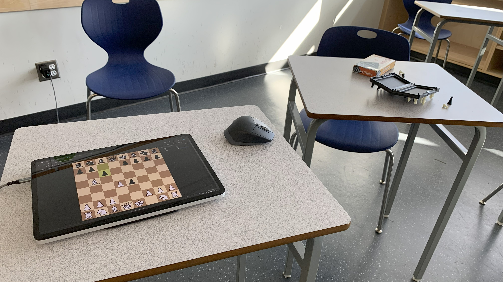

After-school meetings
|
We meet on Tuesdays and Thursdays after school, and for occasionally for formal and informal tournaments online and in-person. Usually, we just play chess, but teaching is available. Come to F204 (gym building) after school! |
|  |